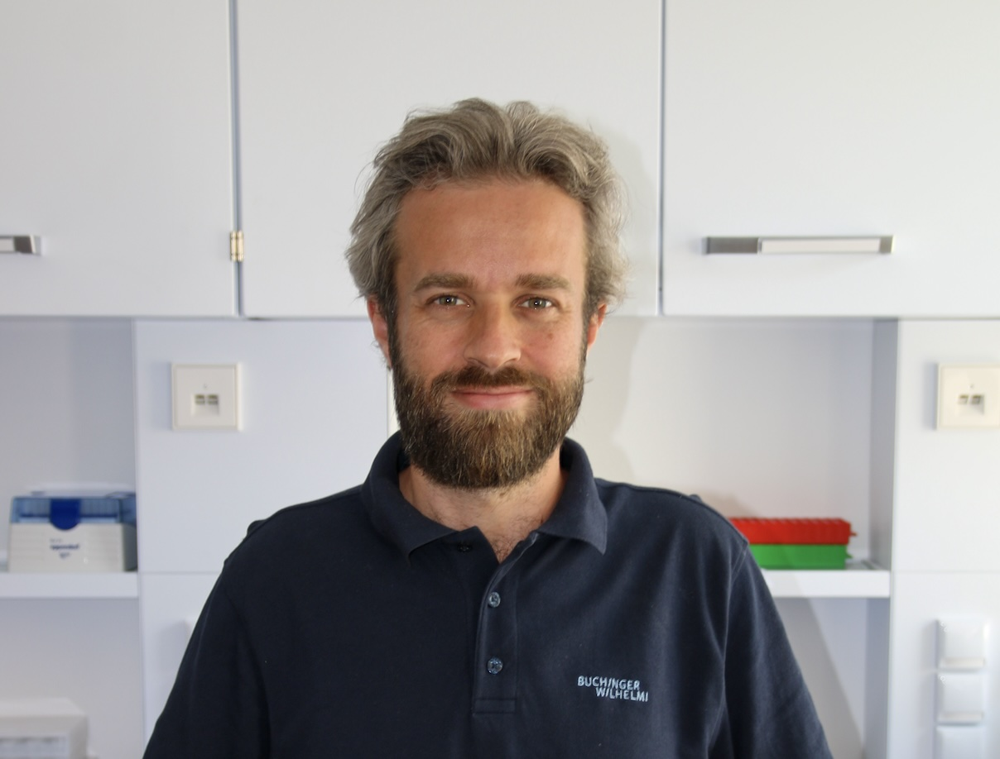

1. Fasting
Building clinically relevant evidence on therapeutic fasting and recovery trajectories.
Scientist · Author · Director
Scientific Director at Buchinger Wilhelmi Clinics and Research Fellow at King's College London. Connecting mechanistic toxicology, clinical fasting, and nutrition science.

Scrollytelling
Each axis builds on the previous one: from molecular toxicology to nutrition interventions and translational clinical evidence.
Building clinically relevant evidence on therapeutic fasting and recovery trajectories.
Investigating real-world pesticide mixtures, endocrine effects, and risk communication.
Integrating dietary exposures with gut ecosystem responses and host health markers.
Comparing plasticizer substitutes and highlighting hidden endocrine-disrupting profiles.
Designing rigorous protocols for transparent and reproducible crop safety testing.
Career continuity
Early work in chemical toxicology established a robust mechanistic framework for exposure science.
Research expanded into microbiome and nutrition, linking environment, metabolism, and disease prevention.
Current clinical fasting programmes translate this evidence into practical patient care and policy dialogue.